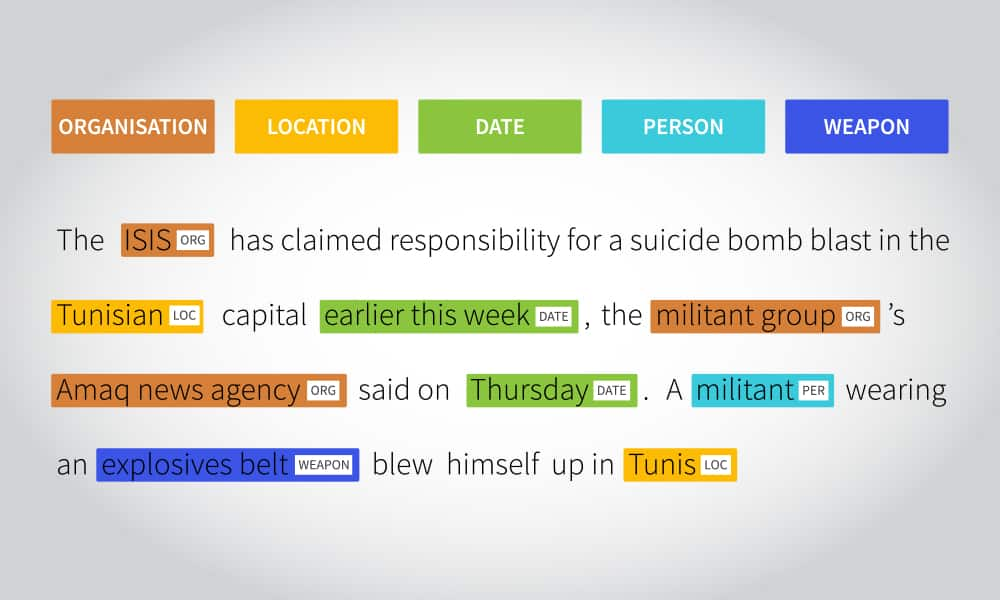
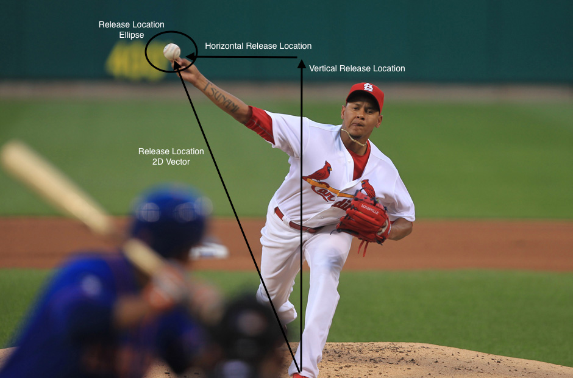
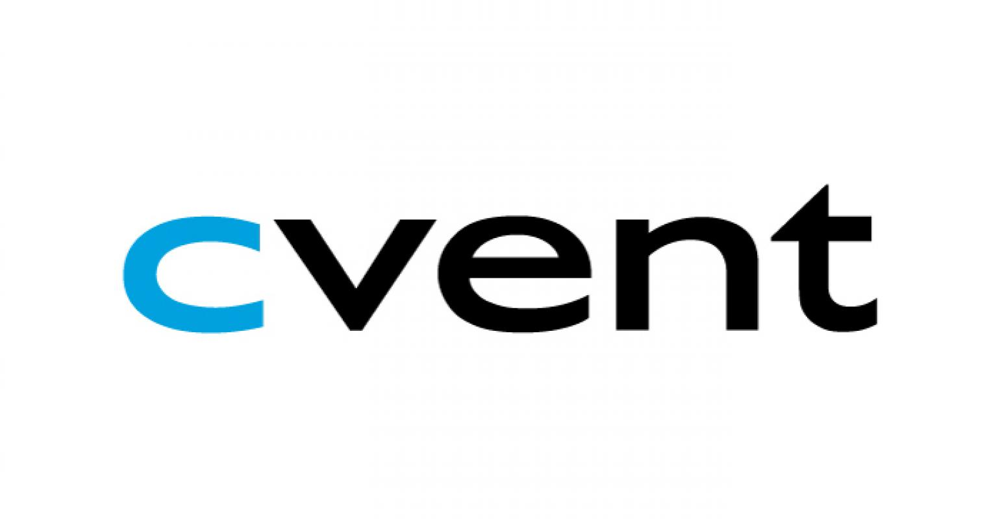

Selected work
Experiments, applications, and things I’ve built.

Machine learning · Natural language processing
Named Entity Recognizer
A model that identifies named entities in tweets. Built for my Natural Language Processing final project using a BERT transformer, a linear layer, and token-level probability distributions.
Python · BERT

Data science · Sports
Pitch Prediction
Cleaning, exploring, and engineering features from baseball data to compare pitch-prediction models, ultimately using a support vector machine.
Data mining · Model comparison
Deep learning · Computer vision
SuperTuxKart AI
A neural-network agent for 2v2 ice hockey in SuperTuxKart. Convolution, batch normalization, and ReLU layers predict a puck heatmap to help the agent choose its next move.
Neural networks · Vision
Full-stack development
Library Volunteer Management
A responsive volunteer signup and scheduling application for Austin libraries, with administrator check-in and reporting.
Node.js · MongoDB · Bootstrap · jQuery
Android · Research
Eye Tests Android App
An image-pattern eye-testing application using an external ultrasonic sensor. Developed through UT Austin’s Research Methods Program under Dr. Ruth Shear.
Android · Sensors
Full-stack development
Dog Adoption WebApp
A shelter application that helps people find a dog to adopt, with search and notification features.
Node.js · MongoDB · Bootstrap · jQuery · Heroku
Android · Robotics
Phone-Controlled Robot
An Android application that turns a phone’s magnetic orientation sensor into a controller for a Mindstorm robot, sending motor commands over Bluetooth.
Android · Bluetooth · Mindstorm
Experience

Aug 2022 — Present
Building and improving meeting-request software on the MRFy’s Law team, working across features, bug fixes, and testing.
Spring Boot · Postman · Mockito · Selenium · Karate · Datadog
Developed REST endpoints, SQL queries, and a React application for a new meeting-request form service, backed by unit and integration tests.
Spring Boot · React · SQL · Mockito · Karate
Worked with a ten-person team of professors and students on Protect Texas Together, a COVID-19 tracking app for the university community.
React Native · Django · Fastlane · Bitrise
Built a cloud-based internal reporting system with fellow interns, from REST APIs and SQL to an S3 reporting interface and Jenkins deployment.
Java · Spring Boot · AWS SQS / S3 · Jenkins
View my full resume ↗ (opens in a new tab)
Skills & tools
I work across web applications, backend systems, and machine learning. My toolkit includes the languages, frameworks, and platforms below.
Also: Bash, R, JIRA, Arduino programming, SOX, Audacity, and SolidWorks.
Education
The University of Texas at Austin
B.S. Computer Science, Honors
GPA: 3.96 / 4.0
Selected coursework +
Big Data, Data Mining, Neural Networks, Natural Language Processing, Computer Vision, Computer Networks, Network Security, Algorithms and Complexity, Operating Systems, Computer Architecture, Matrices and Matrix Calculations, Data Structures, Probability and Statistics, Discrete Math, Introduction to Programming.